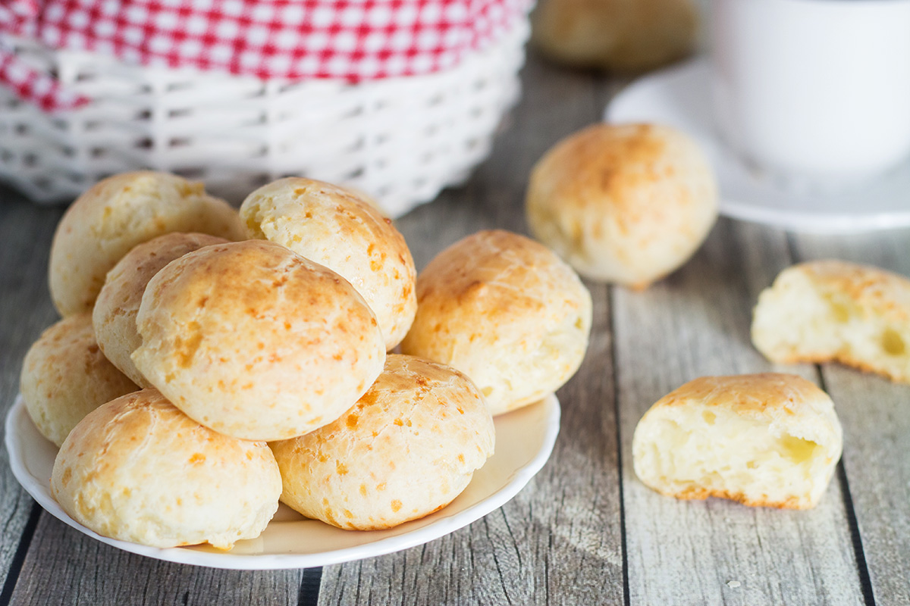

Back
Cheese Rolls
Note from kar: this recipe makes 24 rolls. They are kind of small compared to typical dinner rolls, about half that size. Maybe halve this recipe. These stay good in the fridge for about a week I'd say. But also everyone will love these so maybe making 24 is fine lol.
Ingredients
- 1 cup whole milk
- 1/2 cup olive oil
- 2 eggs
- 2 cups tapioca flour
- 1 teaspoon salt
- 1 1/2 cups Parmesan cheese, finely grated

Instructions
- Preheat the oven to 375°F (190°C). In a saucepan, over medium heat, mix together milk, salt and olive oil. Remove from heat when bubbles start appearing.
- Stir in the tapioca flour and whisk thoroughly. Using a mixer with a paddle attachment beat the dough for few minutes at medium speed.
- In a small bowl, beat the eggs and add them to the dough. Mix well with the mixer at medium speed.
- Add the Parmesan cheese and mix again with the mixer at medium speed. The dough will be sticky, don't worry, it should be like that.
- Now scoop the dough with a tablespoon or an ice cream scoop, form it a little bit into balls and place on the parchment-lined baking sheet. I made the heaping tablespoon sized portions. Transfer to the oven and bake for 15-20 minutes until they have puffed. Enjoy!
Source